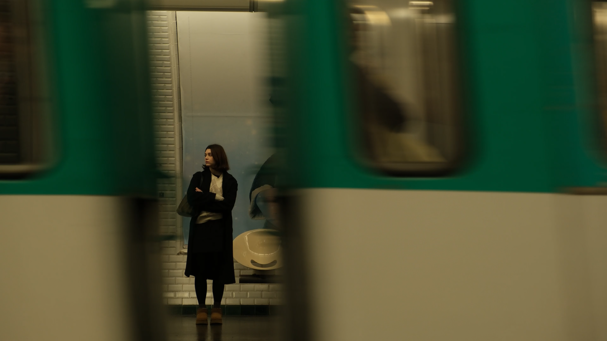
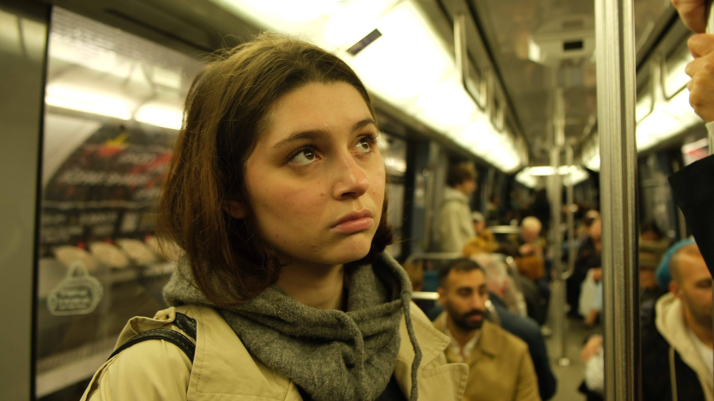
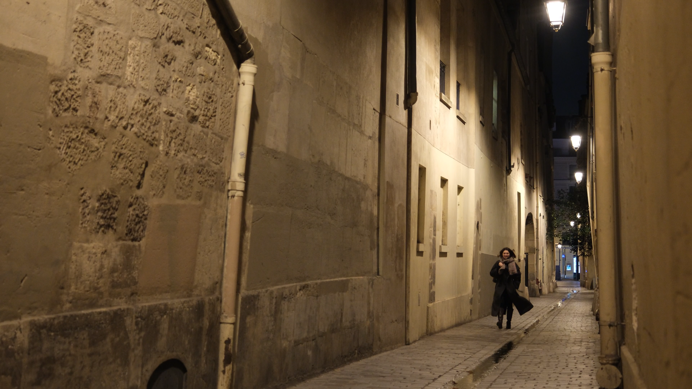
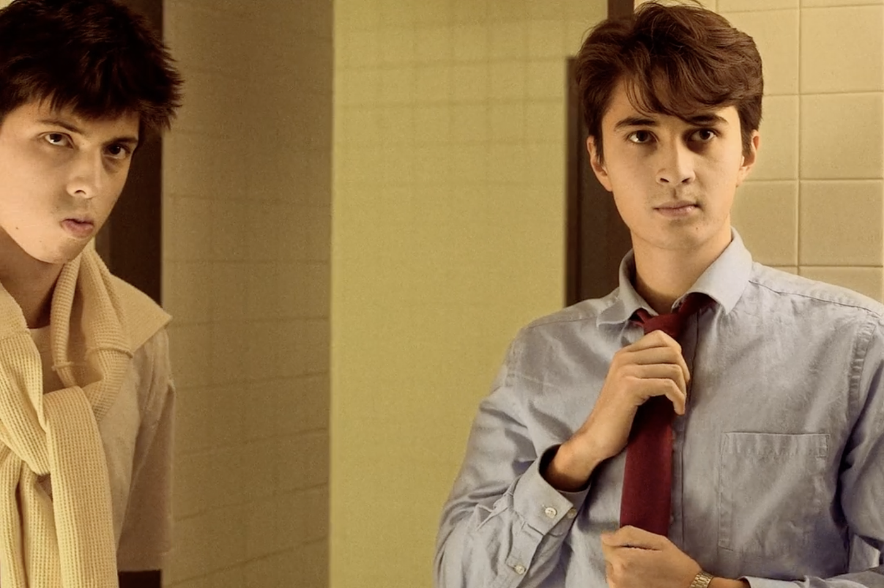
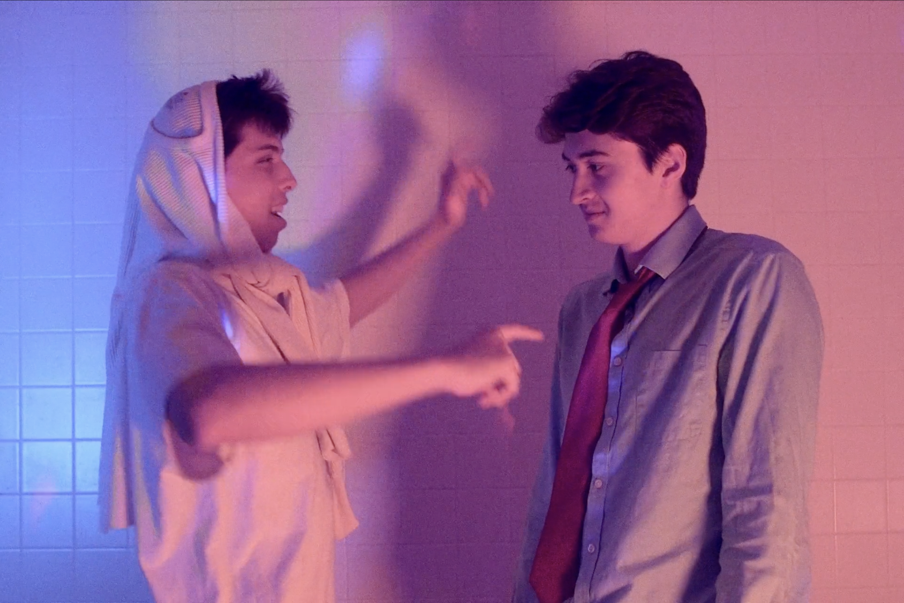
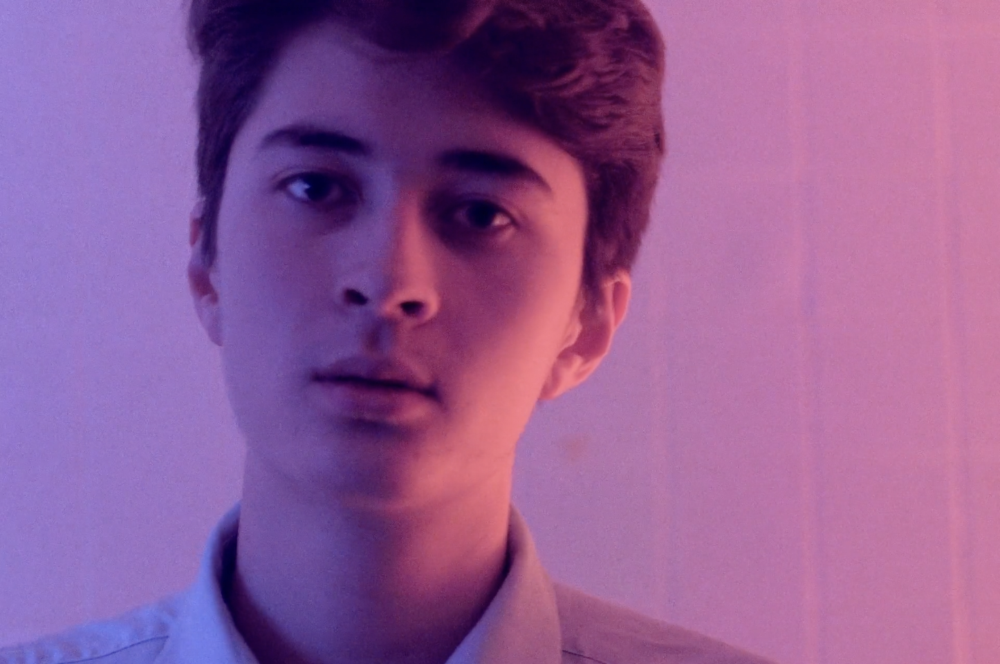
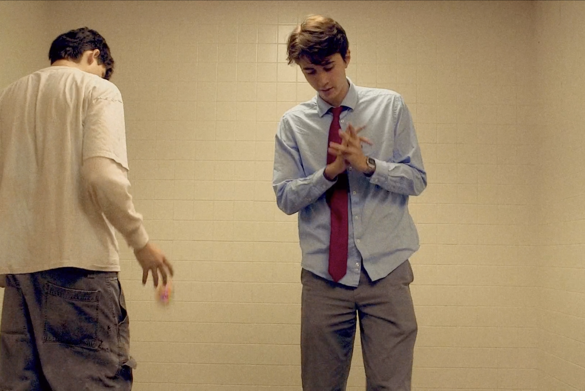

About Chris
Producer and filmmaker in training. A quick learner who is always reliable. I have experience as a producer, DP, gaffer, grip, and PA on various student short film productions. As a proud graduate of Wesleyan University, I am grateful for the creative and cultivating film culture at my alma mater.
I also do screen/stage acting for fun. In my other life, I aspire to become an astronomer.
Projects I've worked on
| Title | Role | Director | Release year |
|---|---|---|---|
| Solitude, Solitude | Producer, DP, Editor | Samantha Sun | In post |
| Stuck | Gaffer | Jasmyne Le | 2024 |
| Baby Bits | Grip | Sloane Stone | 2024 |
| The Planet Janus | Gaffer, Science Consultant | Caroline Lamoureux | 2024 |
| Playback | Special Thanks (PA) | Gavin Zahn | 2024 |
| Park Bench (16 mm) | (Crew) | Angelina Reddy | 2023 |
Stills
DP - "Solutide, Solutide" - dir. Samantha Sun (pre-grade color)



Gaffer - "Stuck" - dir. Jasmyne Le, DP Ray Huang. Watch on Vimeo.



